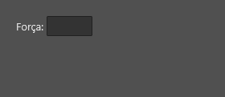
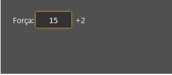
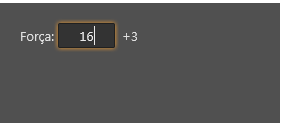
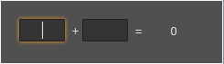
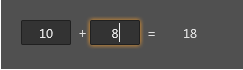

Tag dataLink
Tag dataLink
A tag dataLink representa um componente não visual (não é exibido na interface) que monitora mudanças em um NodeDatabase.
Veja também:
Características
Propriedades e atributos
| Propriedade | Tipo | Valor Padrão | Descrição |
|---|---|---|---|
| name | String | \<string vazio> | Define um nome para a componente. O nome deve ser único, isto é, dentro de um form, não é possível existir 2 controles com o mesmo nome. Se não for definido um nome para o controle no arquivo LFM, um nome único será gerado para ele em tempo de compilação. Nomear controles é especialmente útil quando se quer trabalhar com códigos LUA. |
| field | String | \<string vazio> | Caminho de um campo no NodeDatabase. Quando associado, o dataLink passa a monitorar mudanças no campo informado. Veja também: Lua Form e NodeDatabase NodeDatabase |
| fields | Arranjo de String | {} // \<arranjo vazio> | Idem à propriedade "field", porém permite monitorar mudanças em mais de um campo com um único dataLink. Observação: Não é possível utilizar as propriedades "fields" e "field" ao mesmo tempo, elas são mutualmente exclusivas. |
| defaultValue | String | \<String Vazio> | Quando definido, se o campo identificado pelo atributo "field" estiver vazio, ele será inicializado com este valor informado. |
| defaultValues | Arranjo de String | {} // \<arranjo vazio> | Idem à propriedade "defaultValue", porém permite definir valores padrões para cada um dos campos informado na propriedade "fields" Observação: Não é possível utilizar as propriedades "defaultValue" e "defaultValues" ao mesmo tempo pois elas são mutualmente exclusivas. |
Eventos
| Nome do evento | Descrição |
|---|---|
| onChange | Este evento é invocado quando ocorre uma mudança de valor no campo definido pela propriedade "field" ou quando ocorrer mudança de valor em algum dos campos definidos pela propriedade "fields" Parâmetros/Informações: field - string informando qual campo mudou oldValue - Antigo valor do campo newValue - Novo valor do campo Observações: Este evento pode ser invocado em qualquer uma destas ocasiões: Os dados do nodedatabase da ficha/form acabaram de ser carregados O usuário local alterou o valor de algum campo monitorado pelo dataLink Algum outro usuário remoto alterou algum dos campos monitrados pelo dataLink. |
| onPersistedChange | Este evento é invocado quando ocorre uma mudança de valor no campo definido pela propriedade "field" ou quando ocorrer mudança de valor em algum dos campos definidos pela propriedade "fields" no servidor. Parâmetros/Informações: field - string informando qual campo mudou oldValue - Antigo valor conhecido do campo no servidor. newValue - Novo valor do campo no servidor. Observações: Devido a existência de transações no NodeDatabase e também devido à característica assíncrona do NodeDatabase, o valor dos atributos do NodeDatabases podem, temporariamente, não refletir ao valor salvo no servidor e nem ao valor que os outros usuários remotos tem acesso. Este evento é chamado quando alguma alteração é confirmada no lado do Servidor, persistida e disponibilizada para todos os outros usuários remotos. O valor persistido pode ser obtido através da função NDB.getPersistedAttributeValue() |
| onUserChange | Este evento é invocado quando ocorre uma mudança de valor no campo definido pela propriedade "field" ou quando ocorrer mudança de valor em algum dos campos definidos pela propriedade "fields" porque o usuário local alterou o conteúdo do do campo, seja editando ele visualmente ou através de código Lua. Parâmetros/Informações: field - string informando qual campo mudou oldValue - Antigo valor do campo newValue - Novo valor do campo. Observações: Lembre-se, este evento será disparado apenas quando o usuário local alterar o valor de algum dos campos monitorados pelo dataLink. |
| onChildAdded | Este evento é invocado quando um objeto nodo filho é criado dentro do field que está sendo monitorado (se o campo for um nodo). Parâmetros: node - O objeto nodo filho que foi criado. |
| onChildRemoved | Este evento é invocado quando um objeto nodo filho é removido de dentro do field que está sendo monitorado (se o campo for um nodo). Parâmetros: node - O objeto nodo filho que foi removido. |
Veja Tratando eventos do Lua Form
Exemplos:
Exemplo 1 - Calculando um modificador de atributo de D\&D
| \<?xml version="1.0" encoding="UTF-8"?> ** \<form name="frmFichaTeste"> \<!-- Layout da interface --> \<layout left="20" top="20" height="25" width="125"> \<label align="left" text="Força: " autoSize="true"/> \<edit align="client" horzTextAlign="center" field="atributoForca"/> \<!-- Modificador --> \<label align="right" width="30" field="modificadorForca" horzTextAlign="center"/> \</layout> \<!-- Cálculo de campos / uso de dataLink --> \<dataLink field="atributoForca"> \<event name="onChange"> local valorForca = tonumber(sheet.atributoForca); if (valorForca ~= nil) then sheet.modificadorForca = math.floor(valorForca / 2) - 5; if sheet.modificadorForca > 0 then sheet.modificadorForca = "+" .. sheet.modificadorForca; end; else sheet.modificadorForca = nil; end \</event> \</dataLink> \</form>** |
|---|
  
Neste exemplo, ligamos um edit ao campo "atributoForca" e um label ao campo "modificadorForca"... Usamos um dataLink para monitorar mudanças em "atributoForca" para calcularmos e salvamos o modificador no campo "modificadorForca" (para que o label possa exibir o valor).
Veja também:
Exemplo 2 - Somando dois campos na interface
| \<?xml version="1.0" encoding="UTF-8"?> \<form name="frmFichaTeste"> \<!-- Layout da interface --> \<layout left="20" top="20" height="25" width="200"> \<edit field="parcela1" align="left" horzTextAlign="center" width="50"/> \<label align="left" text=" + " autoSize="true"/> \<edit field="parcela2" align="left" horzTextAlign="center" width="50"/> \<label align="left" text=" = " autoSize="true"/> \<!-- Resultado --> \<label align="client" field="resultadoSoma" horzTextAlign="center"/> \</layout> \<!-- Cálculo de campos / uso de dataLink --> \<dataLink fields="{'parcela1', 'parcela2'}"> \<event name="onChange"> sheet.resultadoSoma = (tonumber(sheet.parcela1) or 0) + (tonumber(sheet.parcela2) or 0); \</event> \</dataLink> \</form> |
|---|
 
Neste exemplo, usamos o dataLink para monitorar dois campos ao mesmo tempo: "parcela1" e "parcela2"
Veja também:
Created with the Personal Edition of HelpNDoc: Revolutionize your documentation process with HelpNDoc's online capabilities